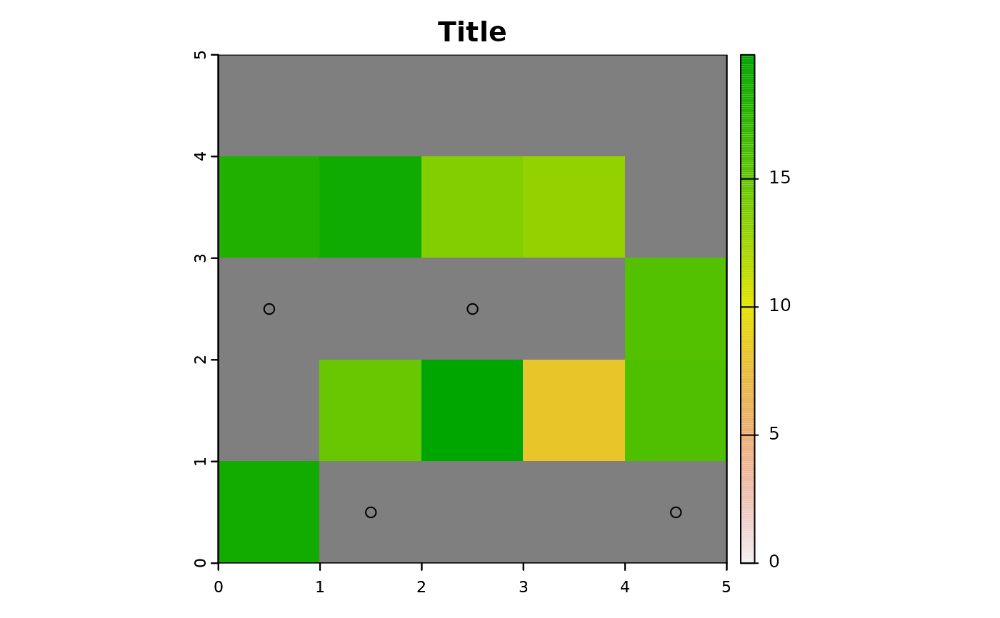

Plot the results of projectRoads
plotRoads(sim, mainTitle, subTitle = paste0("Method: ", sim$roadMethod), ...)sim list result from projectRoads
A title for the plot
A sub title for the plot, by default the roadMethod is used
Other arguments passed to raster plot call for the costSurface
Creates a plot using base graphics
# demo scenario 1
scen <- demoScen[[1]]
# landing set 1 of scenario 1:
land.pnts <- scen$landings.points.sf[scen$landings.points.sf$set==1,]
prRes <- projectRoads(land.pnts, scen$cost.rast, scen$road.line.sf, "lcp")
#> 0s detected in cost raster, these will be considered as existing roads
plotRoads(prRes, "Title")
